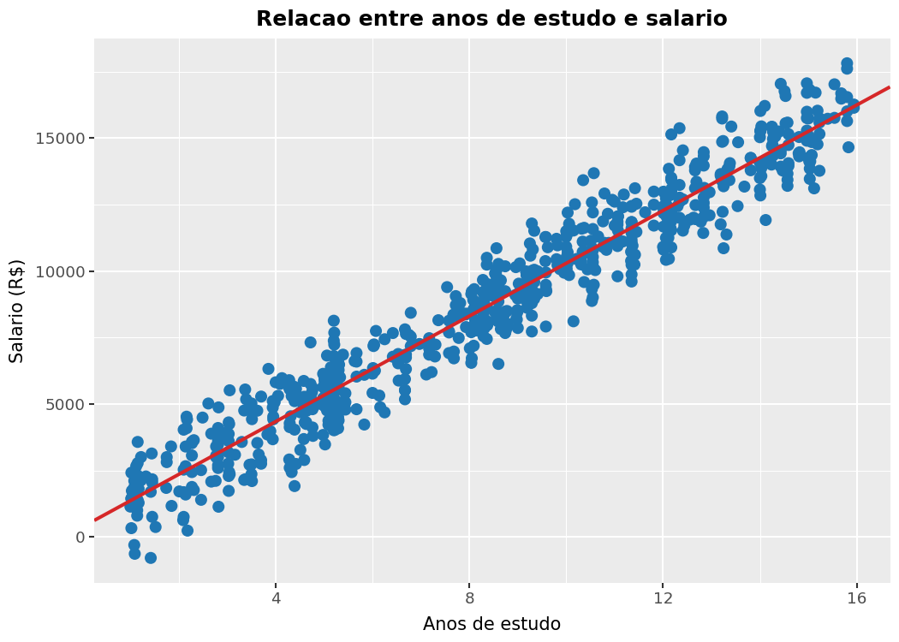

import calendar
from datetime import datetime, timedelta
import requests
import pandas as pd
import plotly.express as px
import time
from requests.exceptions import RequestException
NOMES_MESES = {
1: "Janeiro",
2: "Fevereiro",
3: "Marco",
4: "Abril",
5: "Maio",
6: "Junho",
7: "Julho",
8: "Agosto",
9: "Setembro",
10: "Outubro",
11: "Novembro",
12: "Dezembro",
}
def request_with_retry(
method: str,
url: str,
*,
session: requests.Session | None = None,
max_attempts: int = 3,
backoff_seconds: int = 2,
**kwargs,
) -> requests.Response | None:
"""Executa requisições HTTP com tentativas extras em caso de falha transitória."""
for attempt in range(max_attempts):
try:
requester = session.request if session else requests.request
response = requester(method, url, **kwargs)
response.raise_for_status()
return response
except RequestException as exc:
if attempt == max_attempts - 1:
print(f"Aviso: falha ao acessar {url} ({exc}).")
return None
espera = backoff_seconds * (attempt + 1)
print(
f"Aviso: tentativa {attempt + 1} falhou ({exc}). "
f"Nova tentativa em {espera} s."
)
time.sleep(espera)
def fetch_dollar_series(periodo: str) -> pd.DataFrame:
"""Busca a serie PTAX (cotacao de compra e venda) para o mes informado."""
data_inicial = datetime.strptime(periodo, "%m%Y")
data_final = data_inicial.replace(
day=calendar.monthrange(data_inicial.year, data_inicial.month)[1]
)
consulta_inicial = data_inicial - timedelta(days=7)
base_url = (
"https://olinda.bcb.gov.br/olinda/servico/PTAX/versao/v1/odata/"
"CotacaoDolarPeriodo(dataInicial=@dataInicial,dataFinalCotacao=@dataFinalCotacao)"
)
query = (
f"{base_url}?@dataInicial='{consulta_inicial.strftime('%m-%d-%Y')}'"
f"&@dataFinalCotacao='{data_final.strftime('%m-%d-%Y')}'"
"&$top=1000&$format=json"
)
response = request_with_retry("GET", query, timeout=15)
if response is None:
return pd.DataFrame(columns=["data", "cotacaoCompra", "cotacaoVenda"])
try:
payload = response.json()
except ValueError as exc:
print(f"Aviso: resposta invalida da API PTAX ({exc}).")
return pd.DataFrame(columns=["data", "cotacaoCompra", "cotacaoVenda"])
valores = payload.get("value", [])
if not valores:
print("Aviso: a API PTAX nao retornou dados para o periodo solicitado.")
return pd.DataFrame(columns=["data", "cotacaoCompra", "cotacaoVenda"])
df = pd.DataFrame(valores)
df["data"] = pd.to_datetime(df["dataHoraCotacao"])
df = df.sort_values("data")
return df[["data", "cotacaoCompra", "cotacaoVenda"]]
periodo_escolhido = "052014"
mes_referencia = datetime.strptime(periodo_escolhido, "%m%Y")
inicio_mes = mes_referencia.replace(day=1)
fim_mes = mes_referencia.replace(
day=calendar.monthrange(mes_referencia.year, mes_referencia.month)[1]
)
inicio_mes_ts = pd.Timestamp(inicio_mes)
fim_mes_ts = pd.Timestamp(fim_mes)
rotulo_mes = f"{NOMES_MESES[mes_referencia.month]}/{mes_referencia.year}"
cotacao_df = fetch_dollar_series(periodo_escolhido)
if cotacao_df.empty:
fig_cotacao = px.line(
title=f"Cotacao de venda do dolar (PTAX) -- {rotulo_mes} (dados indisponiveis)"
)
cotacao_total = 0
maior_cotacao = None
data_maior = None
menor_cotacao = None
data_menor = None
else:
cotacao_df["data"] = cotacao_df["data"].dt.normalize()
cotacao_df = (
cotacao_df.sort_values("data")
.groupby("data", as_index=False)
.agg({"cotacaoCompra": "last", "cotacaoVenda": "last"})
)
dados_limpos = cotacao_df[cotacao_df["data"] <= fim_mes_ts]
cotacao_mes = dados_limpos[dados_limpos["data"] >= inicio_mes_ts]
if cotacao_mes.empty:
cotacao_df = pd.DataFrame(columns=["data", "cotacaoCompra", "cotacaoVenda"])
fig_cotacao = px.line(
title=f"Cotacao de venda do dolar (PTAX) -- {rotulo_mes} (dados indisponiveis)"
)
cotacao_total = 0
maior_cotacao = None
data_maior = None
menor_cotacao = None
data_menor = None
else:
ultimo_dia_util = dados_limpos[dados_limpos["data"] < inicio_mes_ts].tail(1)
cotacao_completa = pd.concat(
[ultimo_dia_util, cotacao_mes],
ignore_index=True,
)
calendario_para_ffill = pd.date_range(
start=min(cotacao_completa["data"].min(), inicio_mes_ts),
end=fim_mes_ts,
freq="D",
)
cotacao_df = (
cotacao_completa.set_index("data")
.reindex(calendario_para_ffill)
.ffill()
.reset_index()
.rename(columns={"index": "data"})
)
cotacao_df = cotacao_df[cotacao_df["data"] >= inicio_mes_ts].reset_index(
drop=True
)
fig_cotacao = px.line(
cotacao_df,
x="data",
y="cotacaoVenda",
markers=True,
title=f"Cotacao de venda do dolar (PTAX) -- {rotulo_mes}",
labels={"data": "Data", "cotacaoVenda": "Valor (R$)"},
)
fig_cotacao.update_layout(yaxis_tickprefix="R$ ")
cotacao_total = len(cotacao_df)
maior_cotacao = cotacao_df["cotacaoVenda"].max()
data_maior = cotacao_df.loc[cotacao_df["cotacaoVenda"].idxmax(), "data"].date()
menor_cotacao = cotacao_df["cotacaoVenda"].min()
data_menor = cotacao_df.loc[cotacao_df["cotacaoVenda"].idxmin(), "data"].date()Blog Individual ( Juan Mendes )
Projeto de Sistemas de Informacao – Atividades Individuais
- Serie historica da cotacao do dolar com Plotly
- Monitoramento em tempo real de frota utilizando Folium e Olho Vivo
- Regressao linear matricial conectando anos de estudo e salario
Atividade 1 – Cotacao do dolar por periodo
cotacao_df.head()| data | cotacaoCompra | cotacaoVenda | |
|---|---|---|---|
| 0 | 2014-05-01 | 2.2354 | 2.2360 |
| 1 | 2014-05-02 | 2.2215 | 2.2221 |
| 2 | 2014-05-03 | 2.2215 | 2.2221 |
| 3 | 2014-05-04 | 2.2215 | 2.2221 |
| 4 | 2014-05-05 | 2.2280 | 2.2286 |
fig_cotacaoAtividade 2 – Monitoramento de frota de onibus
import os
from typing import Tuple
import pandas as pd
import requests
import folium
TOKEN_PADRAO = "2627f5b82681d40852fc6d0be89d543be4a1c01b71084c0fa53e5ee52889c0f4"
SPTRANS_TOKEN = os.environ.get("SPTRANS_TOKEN", TOKEN_PADRAO)
NUMERO_LINHA = "8300-10" # Term. Lapa <-> Term. Pirituba
def buscar_linhas(sessao: requests.Session, termo: str) -> pd.DataFrame:
"""Retorna os codigos (cl) cadastrados para uma linha informada."""
if sessao is None:
return pd.DataFrame(columns=["cl", "sl", "tp", "ts"])
url = f"http://api.olhovivo.sptrans.com.br/v2.1/Linha/Buscar?termosBusca={termo}"
resposta = request_with_retry("GET", url, session=sessao, timeout=10)
if resposta is None:
print("Aviso: nao foi possivel localizar a linha na API Olho Vivo.")
return pd.DataFrame(columns=["cl", "sl", "tp", "ts"])
try:
dados = resposta.json()
except ValueError as exc:
print(f"Aviso: resposta invalida ao buscar dados da linha ({exc}).")
return pd.DataFrame(columns=["cl", "sl", "tp", "ts"])
df = pd.DataFrame(dados)
if df.empty:
print("Aviso: a API nao retornou codigos para a linha informada.")
return df
def autenticar(token: str) -> requests.Session:
"""Cria sessao autenticada na API Olho Vivo."""
sessao = requests.Session()
resposta = request_with_retry(
"POST",
f"http://api.olhovivo.sptrans.com.br/v2.1/Login/Autenticar?token={token}",
session=sessao,
timeout=10,
)
if resposta is None:
print("Aviso: autenticacao na API Olho Vivo falhou apos varias tentativas.")
return None
if resposta.text.strip().lower() != "true":
print("Aviso: token informado nao foi aceito pela API Olho Vivo.")
return None
return sessao
def obter_paradas(sessao: requests.Session, codigo_linha: int) -> pd.DataFrame:
"""Retorna as paradas cadastradas para a linha informada."""
if sessao is None:
return pd.DataFrame(columns=["np", "ed", "py", "px"])
url = (
"http://api.olhovivo.sptrans.com.br/v2.1/"
f"Parada/BuscarParadasPorLinha?codigoLinha={codigo_linha}"
)
resposta = request_with_retry("GET", url, session=sessao, timeout=10)
if resposta is None:
print("Aviso: nao foi possivel obter as paradas da linha.")
return pd.DataFrame(columns=["np", "ed", "py", "px"])
try:
dados = resposta.json()
except ValueError as exc:
print(f"Aviso: resposta invalida ao buscar paradas ({exc}).")
return pd.DataFrame(columns=["np", "ed", "py", "px"])
df = pd.DataFrame(dados)
if df.empty:
return pd.DataFrame(columns=["np", "ed", "py", "px"])
return df
def obter_posicoes(sessao: requests.Session, codigo_linha: int) -> pd.DataFrame:
"""Obtem as posicoes em tempo real dos veiculos da linha."""
if sessao is None:
return pd.DataFrame(columns=["p", "ta", "py", "px"])
url = (
"http://api.olhovivo.sptrans.com.br/v2.1/"
f"Posicao/Linha?codigoLinha={codigo_linha}"
)
resposta = request_with_retry("GET", url, session=sessao, timeout=10)
if resposta is None:
print("Aviso: nao foi possivel obter a posicao em tempo real da linha.")
return pd.DataFrame(columns=["p", "ta", "py", "px"])
try:
dados = resposta.json()
except ValueError as exc:
print(f"Aviso: resposta invalida ao buscar posicoes ({exc}).")
return pd.DataFrame(columns=["p", "ta", "py", "px"])
df = pd.DataFrame(dados.get("vs", []))
if df.empty:
return pd.DataFrame(columns=["p", "ta", "py", "px"])
return df
sessao = autenticar(SPTRANS_TOKEN)
linhas_df = buscar_linhas(sessao, NUMERO_LINHA)
codigos_linha = (
linhas_df["cl"].dropna().astype(int).unique().tolist()
if not linhas_df.empty
else []
)
paradas_df = pd.DataFrame(columns=["np", "ed", "py", "px"])
if codigos_linha:
paradas_lista = [obter_paradas(sessao, codigo) for codigo in codigos_linha]
paradas_df = (
pd.concat(paradas_lista, ignore_index=True)
if paradas_lista
else paradas_df
)
if not paradas_df.empty:
paradas_df = paradas_df.drop_duplicates(subset=["np", "ed"]).reset_index(
drop=True
)
else:
print(
"Aviso: nenhum codigo de linha foi encontrado. "
"Verifique se o identificador informado esta correto."
)
posicoes_df = pd.DataFrame(columns=["p", "ta", "py", "px", "sentido", "rota"])
if not linhas_df.empty:
posicoes_frames = []
for _, linha in linhas_df.iterrows():
try:
codigo_linha = int(linha.get("cl"))
except (TypeError, ValueError):
continue
posicoes = obter_posicoes(sessao, codigo_linha)
if posicoes.empty:
continue
sentido = "Ida" if int(linha.get("sl", 0)) == 1 else "Volta"
origem = (linha.get("tp") or "").strip()
destino = (linha.get("ts") or "").strip()
rota = f"{origem} -> {destino}" if origem and destino else sentido
posicoes = posicoes.assign(sentido=sentido, rota=rota)
posicoes_frames.append(posicoes)
if posicoes_frames:
posicoes_df = pd.concat(posicoes_frames, ignore_index=True)
if "ta" in posicoes_df.columns:
posicoes_df = posicoes_df.sort_values("ta", ascending=False).reset_index(
drop=True
)
paradas_resumo = paradas_df[["np", "ed"]].rename(
columns={"np": "Parada", "ed": "Endereco"}
)
colunas_resumo = [col for col in ["p", "sentido", "rota", "ta"] if col in posicoes_df]
if colunas_resumo:
posicoes_resumo = posicoes_df[colunas_resumo].rename(
columns={
"p": "Prefixo",
"sentido": "Sentido",
"rota": "Rota",
"ta": "Atualizacao (UTC)",
}
)
else:
posicoes_resumo = pd.DataFrame(
columns=["Prefixo", "Sentido", "Rota", "Atualizacao (UTC)"]
)
def obter_centro_mapa(
paradas: pd.DataFrame, posicoes: pd.DataFrame
) -> Tuple[float, float]:
"""Retorna um ponto central adequado para iniciar o mapa."""
if not posicoes.empty:
return float(posicoes.iloc[0]["py"]), float(posicoes.iloc[0]["px"])
if not paradas.empty:
return float(paradas.iloc[0]["py"]), float(paradas.iloc[0]["px"])
# fallback aproximado
return -23.5408, -46.7035
latitude_centro, longitude_centro = obter_centro_mapa(paradas_df, posicoes_df)
mapa = folium.Map(location=[latitude_centro, longitude_centro], zoom_start=13)
camada_paradas = folium.FeatureGroup(name="Paradas").add_to(mapa)
camada_posicoes = folium.FeatureGroup(name="Veiculos em tempo real").add_to(mapa)
for _, parada in paradas_df.iterrows():
folium.Marker(
location=[parada["py"], parada["px"]],
popup=f"{parada['np']}<br>{parada['ed']}",
icon=folium.Icon(color="blue", icon="info-sign"),
).add_to(camada_paradas)
for _, veiculo in posicoes_df.iterrows():
latitude = veiculo.get("py")
longitude = veiculo.get("px")
if pd.isna(latitude) or pd.isna(longitude):
continue
popup_linhas = [
f"Prefixo {veiculo.get('p', 'desconhecido')}",
f"Sentido: {veiculo.get('sentido', 'nao informado')}",
]
rota_info = veiculo.get("rota", "")
if isinstance(rota_info, str) and rota_info:
popup_linhas.append(f"Rota: {rota_info}")
ta_valor = veiculo.get("ta")
if ta_valor:
popup_linhas.append(f"Atualizado em {ta_valor}")
popup_texto = "<br>".join(popup_linhas)
folium.Marker(
location=[float(latitude), float(longitude)],
popup=popup_texto,
icon=folium.Icon(color="red", icon="bus", prefix="fa"),
).add_to(camada_posicoes)
folium.LayerControl().add_to(mapa)
total_paradas = len(paradas_df)
veiculos_em_operacao = len(posicoes_df)
ultima_atualizacao = (
posicoes_df["ta"].max() if not posicoes_df.empty else "sem dados no momento"
)paradas_resumo.head(10)| Parada | Endereco | |
|---|---|---|
| 0 | FREGUESIA B/C | R CESARE BADIALI/ R ENRICO CARAFA - Rua Giácom... |
| 1 | MARGINAL B/C | AC PONTE DO PIQUERI AV EMB MACEDO SOARES/ R PR... |
| 2 | JOSE MARIA B/C | R BELCHIOR CARNEIRO/ PC SEBASTIAO JAYME PINTO |
| 3 | ZANELLA B/C | R NICOLAU PERRONE/ AV ERMANO MARCHETTI |
| 4 | GUERINO B/C | AV MIGUEL DE CASTRO/ R MAL. MENDES DE MORAIS |
| 5 | MANOEL BARBOSA B/C | R DR. FERREIRA DA LUZ/ R DOM MANUEL D ELBOUX |
| 6 | CABO ADAO B/C | R DR. EDUARDO VITOR DE LAMARE/ R CONSTANTINO NERY |
| 7 | PRAÇA YARA B/C | R PRF. BELFORD ROXO/ AV MIGUEL DE CASTRO |
| 8 | MIGUEL DE CASTRO | R STO ALIRIO/ R JOSE ALBANO |
| 9 | 2 - RIO VERDE B/C | R CANNER/ R ROBERTO SWICKER JUNIOR |
posicoes_resumo| Prefixo | Sentido | Rota | Atualizacao (UTC) | |
|---|---|---|---|---|
| 0 | 11771 | Ida | TERM. LAPA -> TERM. PIRITUBA | 2025-11-20T14:55:18Z |
| 1 | 11764 | Volta | TERM. LAPA -> TERM. PIRITUBA | 2025-11-20T14:54:37Z |
mapaMake this Notebook Trusted to load map: File -> Trust Notebook
Atividade 3 – Regressao linear por matriz
import numpy as np
import pandas as pd
from plotnine import (
ggplot,
aes,
geom_point,
geom_abline,
theme,
element_text,
labs,
)
x = np.loadtxt("dados_x.txt", dtype=float)
y = np.loadtxt("dados_y.txt", dtype=float)
X = np.column_stack([np.ones_like(x), x])
beta = np.linalg.inv(X.T @ X) @ X.T @ y
a, b = beta
y_estimado = a + b * x
residuos = y - y_estimado
ss_res = np.sum(residuos**2)
ss_tot = np.sum((y - y.mean()) ** 2)
r2 = 1 - ss_res / ss_tot
resultado_df = (
pd.DataFrame(
{
"Anos de estudo": x,
"Salario observado (R$)": y,
"Salario estimado (R$)": y_estimado,
}
)
.sort_values("Anos de estudo")
.reset_index(drop=True)
.round(2)
)
df_plot = pd.DataFrame({"x": resultado_df["Anos de estudo"], "y": resultado_df["Salario observado (R$)"]})
plot_regressao = (
ggplot(df_plot, aes("x", "y"))
+ geom_point(color="#1f77b4", size=2.8)
+ geom_abline(intercept=a, slope=b, color="#d62728", size=1.1)
+ labs(
title="Relacao entre anos de estudo e salario",
x="Anos de estudo",
y="Salario (R$)",
)
+ theme(
plot_title=element_text(size=12, weight="bold"),
axis_title=element_text(size=10),
)
)
plot_regressao.save("grafico-atividade3.png", verbose=False, dpi=150)
grafico_path = "grafico-atividade3.png"resultado_df| Anos de estudo | Salario observado (R$) | Salario estimado (R$) | |
|---|---|---|---|
| 0 | 1.00 | 1143.98 | 1365.68 |
| 1 | 1.02 | 2419.26 | 1384.39 |
| 2 | 1.02 | 1447.13 | 1389.05 |
| 3 | 1.02 | 334.16 | 1389.11 |
| 4 | 1.02 | 1214.72 | 1389.13 |
| ... | ... | ... | ... |
| 695 | 15.80 | 16539.95 | 16042.26 |
| 696 | 15.80 | 17606.52 | 16042.30 |
| 697 | 15.83 | 14651.59 | 16066.79 |
| 698 | 15.94 | 16136.22 | 16176.73 |
| 699 | 15.94 | 16257.79 | 16178.58 |
700 rows × 3 columns
from pathlib import Path
from IPython.display import Image, display
display(Image(grafico_path))
Path(grafico_path).unlink(missing_ok=True)
As tres atividades demonstram a coleta de dados em fontes externas, o tratamento por meio de pandas e a visualizacao interativa com Plotly e Folium. O material esta pronto para ser apresentado como blog do curso de Sistemas de Informacao e pode ser expandido com novas rotinas conforme as proximas etapas da disciplina.